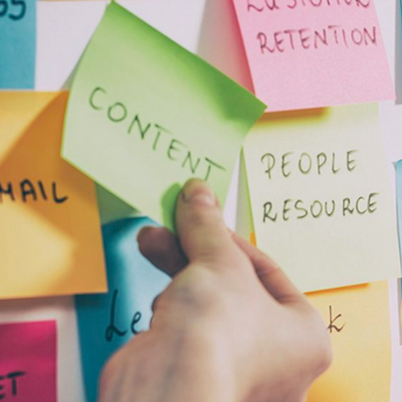

Adaptamos nuestros servicios a las necesidades de nuestros clientes y sus usuarios y usuarias.
Esto incluye hibridación de métodos, técnicas y herramientas, además de hibridación entre nuestros servicios.

Somos un equipo que cuenta con más de 15 años de experiencia.

Contamos con personas especializadas en diversas áreas del diseño y las humanidades.

Creemos en elpoder de la creatividad y la curiosidad compartidas.
Adaptamos nuestros servicios a las necesidades de nuestros clientes y sus usuarios y usuarias.
Esto incluye hibridación de métodos, técnicas y herramientas, además de hibridación entre nuestros servicios.
Contamos con paquetes de talleres sobre temas tan diversos como liderazgo, design thinking, design sprint, etnografía, netnografía, storytelling y metodologías lean.
Cada uno de nuestros talleres le garantiza calidad en contenidos, recursos y dinámicas. Son adaptados de acuerdo a la disposición de tiempo y cantidad de participantes y objetivos de nuestros clientes.
Desarrollamos charlas de acuerdo al tamaño de los grupos y de la disponibilidad de tiempo de la audiencia, los temas se desarrollan acorde a las necesidades de su organización o empresa.
Gracias a que contamos con un equipo interdisciplinario, los temas de nuestras charlas son diversos e integrales, siempre sumando tópicos innovadores y de acuerdo al mercado.
Con más de 15 años de experiencia en investigación social, aplicamos métodos y técnicas comprobados, realizamos trabajo de campo y desarrollamos procesos de investigación de forma integral.
Hemos realizado investigaciones para instituciones estatales, empresa privada y organizaciones nacionales e internacionales, además de muchas otras iniciativas.
Don Norman, diseñador e investigador
Ruth Benedict, antropóloga